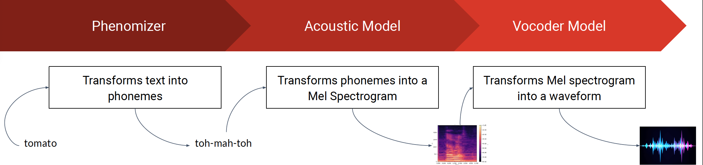
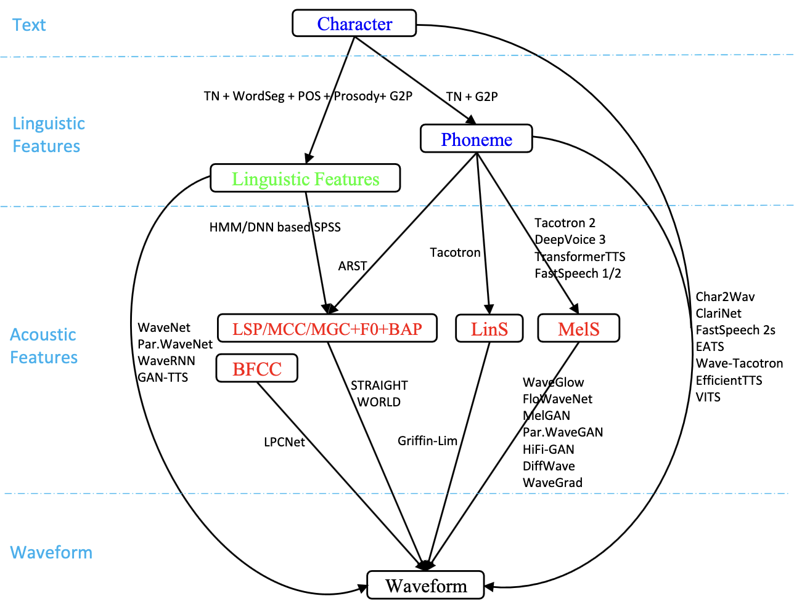

The Evolution of Text-to-Speech and Voice Cloning #
Overview #
Text-to-speech is a surprisingly ancient fascination; scientists as early as 1779 were building models to emulate the human voice. The 30s saw the developmemt of vocoders, which used electronic synthesizers to reproduce human speech in limited capacity. Development on TTS technology remained within the realm of computational and mathematical techniques for speech synthesis until the emergence of deep-learning based technqiues, which improved the quality and naturalness of synthesized voices dramtically. Deepfaked audios, as part of this evolution, have thus developed as a result of advancements in deep neural networks and related techniques.
We summarize below the most popular deepfake tools:
| Tool | Key Features |
|---|---|
| Lyrebird | • Fast • Can produce 1000 sentences per second |
| Char2Wave | End-to-end model with 2 components: reader and neural vocoder. Reader is an encoder-decoder model with attention. |
| WaveNet | Based on PixleCNN |
| Deep Voice 3 | Has 3 components: encoder, decoder, convertor |
| VITS | Parallel end-to-end TTS method that generates more natural sounding audio than current two-stage models |
| YourTTS | • Based on VITS model • Supports multi-speaker, multilingual speech |
| NeMo | State-of-the-art neural TTS where both cascaded and end-to-end (upcoming) systems are included |
Text-to-Speech: Basic Mechanism #

Step 1: Phenomizer
- Phonemizer transforms text into phonemes.
- Phonemes are a textual representation of the pronunciation of words (for example — the word tomato will have different phonemes in an American and British accent), and this representation helps the downstream model achieve better results.
- No machine learning occurs here.
Step 2: Acoustic Features
- An acoustic model transforms phonemes into a Mel spectrogram.
- Mel Spectrogram is a representation of audio in the time X frequency domain. A spectrogram is achieved by applying a short Fourier transform (STFT) on overlapping time windows of a raw audio waveform.
- Typically, a trained model is used to generate acoustic features from input text; these features represent the spectral characteristics of speech and include information about the fundamental frequency (F0), spectral envelope, and duration.
- Many advanced pieces of information are captured here, like intonation, rhythm and stress patterns, and depending on what information is captured by the model, it can be possible to handle speaker variability.
Step 3: Vocoder Model / Waveform Synthesis
- The Mel Spectrogram is converted into a waveform
- Waveform is sampled at 24/48 kHz, where each sample is digitized into a 16-bit number. These numbers represent the amount of air pressure at each moment in time, which is the sound we eventually hear in our ears.
 From “A Survey on Neural Speech Synthesis” at https://doi.org/10.48550/arXiv.2106.15561. Models used for each step are shown.